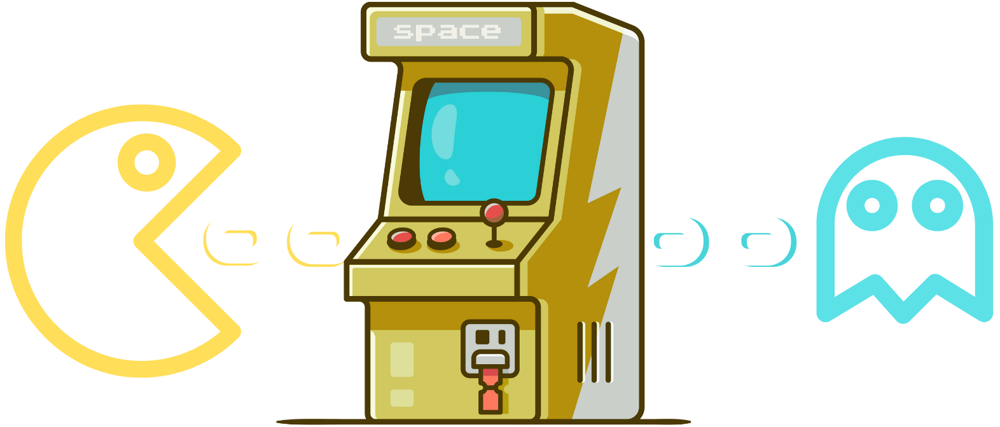

GAME STATION
Se você é apaixonado por games clássicos e quer reviver os melhores momentos da sua infância, você está no lugar certo! O Game Station é o seu portal definitivo para baixar jogos e emuladores dos consoles que marcaram gerações. Aqui você encontra uma vasta seleção de títulos e ferramentas para rodar jogos dos seguintes consoles:
- 🕹️ Game Boy Advance (GBA)
- 🕹️ Game Boy Color (GBC)
- 🕹️ PlayStation 1
- 🕹️ PlayStation Portable (PSP)
- 🕹️ Nintendo DS
- 🕹️ Nintendo 3DS
Tudo organizado, testado e pronto para download!